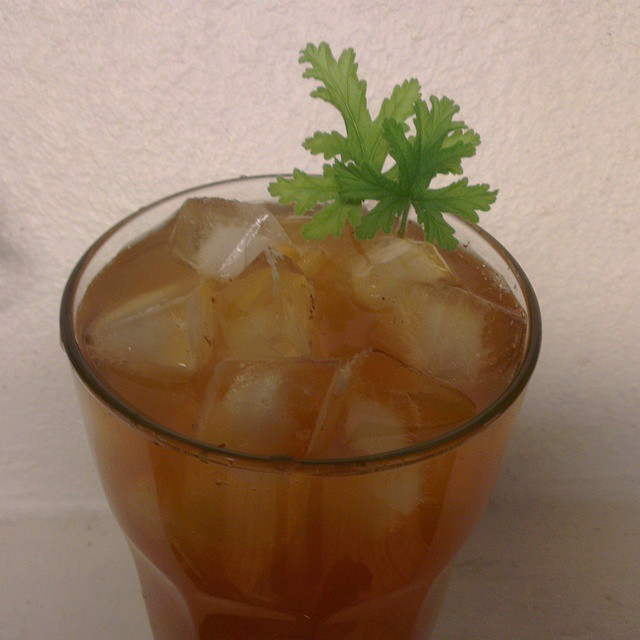

Nu är det dags att göra plats för höstens nyheter och då måste det gamla bort. 50% på dessa söta koppar. Finns i både blå och rosa.
Formex Augusti 2015
Vi hittade Emma som bakar våra underbart goda skorpor från Emmas Skafferi på Formexmässan.
Receptet på vårt populära iste

1 l vatten
1/4-1/2 dl te
1/2 dl rårörsocker
1/2 dl pressad citron
Koka upp vatten och häll i tebladen. Låt dra ca 4 min. Sila bort bladen och blanda ner socker och citron efter smak. Kyl och servera med is och ev myntablad.
Till vårt iste använde vi rooibos syrliga Ginger eller Grön frisk och het. Prova gärna ditt egna favoritte!